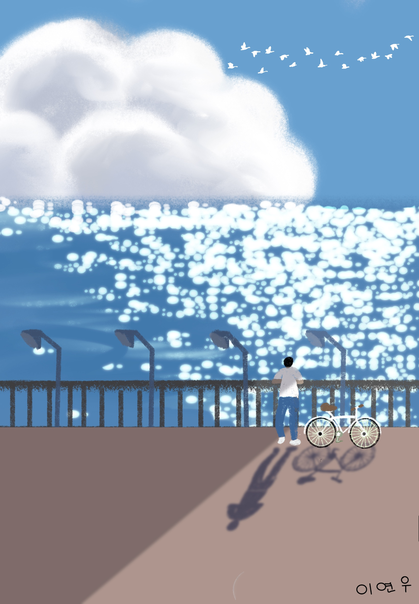

우리 딸 연우가 주인공인 스마트폰 전용 게임!
🎮 조작 규칙
🚴 **1단계 (자전거 라이딩)**: 장애물이 오면 아래의 파란 [점프] 버튼을 탭해 피해요!
🥒 **2단계 (오이팩하기)**: 하단 [좌우 버튼]을 누르거나, 손가락으로 얼굴을 잡고 좌우로 스윽 비비면 오이가 얼굴에 철석 달라붙어요!
다음 단계로 힘차게 넘어갑니다!
우리 연우 오이팩 완성으로 피부가 반짝반짝 보들보들해졌어요! 🥒✨
0점
